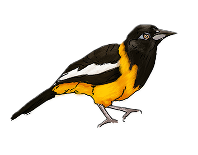

¿Qué ofrece el turismo venezolano? 
Podrás conocer los principales eventos culturales, festividades y deportes extremos. También disfrutarás de deliciosos platillos de la gastronomía venezolana y descubrirás la pasión y la alegría del pueblo venezolano.